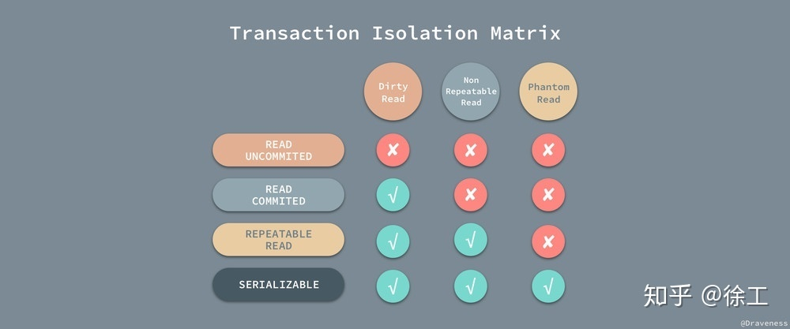

Atomicity, Consistency, Isolation, Durability
1. 原子性： 要么全部都执行，要都不执行
回滚日志（undo log）:
回滚日志除了能够在发生错误或者用户执行 ROLLBACK 时提供回滚相关的信息，它还能够在整个系统发生崩溃、数据库进程直接被杀死后，当用户再次启动数据库进程时，还能够立刻通过查询回滚日志将之前未完成的事务进行回滚，这也就需要回滚日志必须先于数据持久化到磁盘上，是我们需要先写日志后写数据库的主要原因。
回滚日志并不能将数据库物理地恢复到执行语句或者事务之前的样子；它是逻辑日志，当回滚日志被使用时，它只会按照日志逻辑地将数据库中的修改撤销掉看，可以理解为，我们在事务中使用的每一条 INSERT 都对应了一条 DELETE，每一条 UPDATE 也都对应一条相反的 UPDATE 语句。
事务的状态： Active, Commited, Failed
- Active：事务的初始状态，表示事务正在执行；
- Partially Commited：在最后一条语句执行之后；
- Failed：发现事务无法正常执行之后；
- Aborted：事务被回滚并且数据库恢复到了事务进行之前的状态之后；
- Commited：成功执行整个事务；
并行事务的原子性
Nonrecoverable Schedule:
A recoverable schedule is one where, for each pair of transactions Ti and Tj such that Tj reads a data item previously written by Ti , the commit operation of Ti appears before the commit operation of Tj .
Transaction2 依赖于 Transaction1，而 Transaction3 又依赖于 Transaction1，当 Transaction1 由于执行出现问题发生回滚时，为了保证事务的原子性，就会将 Transaction2 和 Transaction3 中的工作全部回滚，这种情况也叫做级联回滚（Cascading Rollback），级联回滚的发生会导致大量的工作需要撤回，是我们难以接受的，不过如果想要达到绝对的原子性，这件事情又是不得不去处理的，
2. 持久性
当事务已经被提交之后，就无法再次回滚了，唯一能够撤回已经提交的事务的方式就是创建一个相反的事务对原操作进行『补偿』，这也是事务持久性的体现之一。
重做日志
MySQL 使用重做日志（redo log）实现事务的持久性，重做日志由两部分组成，一是内存中的重做日志缓冲区，因为重做日志缓冲区在内存中，所以它是易失的，另一个就是在磁盘上的重做日志文件，它是持久的。
回滚日志和重做日志
MySQL 中的两种日志，回滚日志（undo log）和重做日志（redo log）；在数据库系统中，事务的原子性和持久性是由事务日志（transaction log）保证的，在实现时也就是上面提到的两种日志，前者用于对事务的影响进行撤销，后者在错误处理时对已经提交的事务进行重做，它们能保证两点：
- 发生错误或者需要回滚的事务能够成功回滚（原子性）；
- 在事务提交后，数据没来得及写会磁盘就宕机时，在下次重新启动后能够成功恢复数据（持久性）；
3. 隔离性
事务的隔离级别
SQL 标准中定义了四种数据库的事务的隔离级别：READ UNCOMMITED、READ COMMITED、REPEATABLE READ 和 SERIALIZABLE；每个事务的隔离级别其实都比上一级多解决了一个问题：
- RAED UNCOMMITED：使用查询语句不会加锁，可能会读到未提交的行（Dirty Read）；
- READ COMMITED：只对记录加记录锁，而不会在记录之间加间隙锁，所以允许新的记录插入到被锁定记录的附近，所以再多次使用查询语句时，可能得到不同的结果（Non-Repeatable Read）；
- REPEATABLE READ：多次读取同一范围的数据会返回第一次查询的快照，不会返回不同的数据行，但是可能发生幻读（Phantom Read）；
- SERIALIZABLE：InnoDB 隐式地将全部的查询语句加上共享锁，解决了幻读的问题；
随着事务隔离级别变得越来越严格，数据库对于并发执行事务的性能也逐渐下降。

隔离级别的实现
使用并发控制机制对在同一时间执行的事务进行控制
锁
锁住那些需要访问的数据项， MySQL 和常见数据库中的锁都分为两种，共享锁（Shared）和互斥锁（Exclusive），前者也叫读锁，后者叫写锁。
时间戳 Timestamp
为每一条记录保留两个字段；读时间戳中保存所有访问该记录的事务中的最大时间戳，而记录行的写时间戳中保存了将记录改到当前值的事务的时间戳。
使用时间戳实现事务的隔离性时，往往都会使用乐观锁，先对数据进行修改，在写回时再去判断当前值，也就是时间戳是否改变过，如果没有改变过，就写入，否则，生成一个新的时间戳并再次更新数据。
多版本和快照隔离： MVCC
4. 一致性
数据库 ACID 中的一致性对事务的要求不止包含对数据完整性以及合法性的检查，还包含应用层面逻辑的正确。
Ensuring consistency for an individual transaction is the responsibility of the application programmer who codes the transaction. - Database System Concepts
CAP 定理中的数据一致性，其实是说分布式系统中的各个节点中对于同一数据的拷贝有着相同的值；而 ACID 中的一致性是指数据库的规则，如果 schema 中规定了一个值必须是唯一的，那么一致的系统必须确保在所有的操作中，该值都是唯一的，
Ref: MySQL事务ACID实现详解